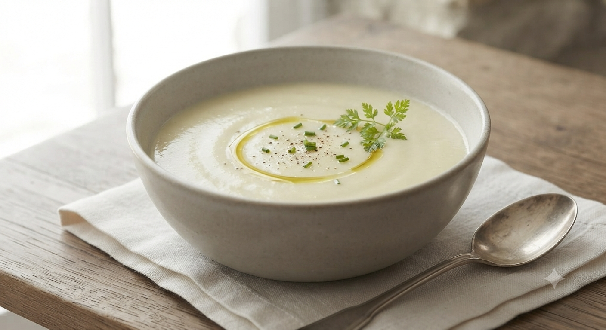
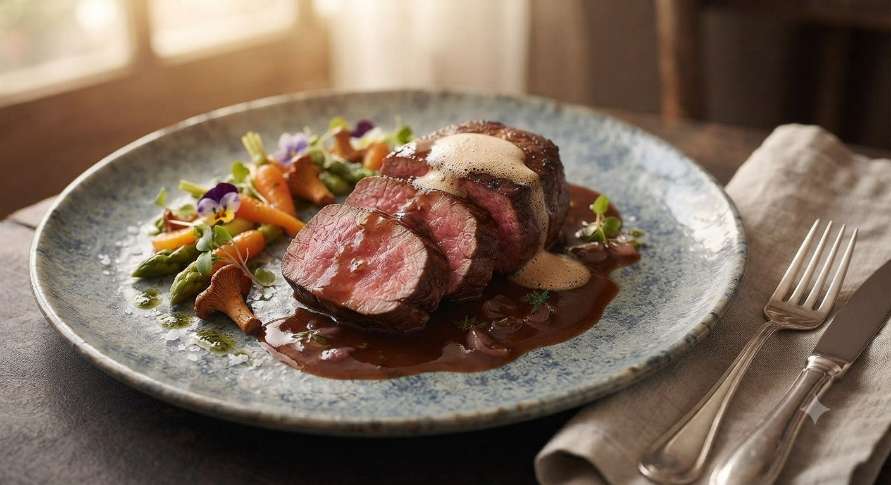
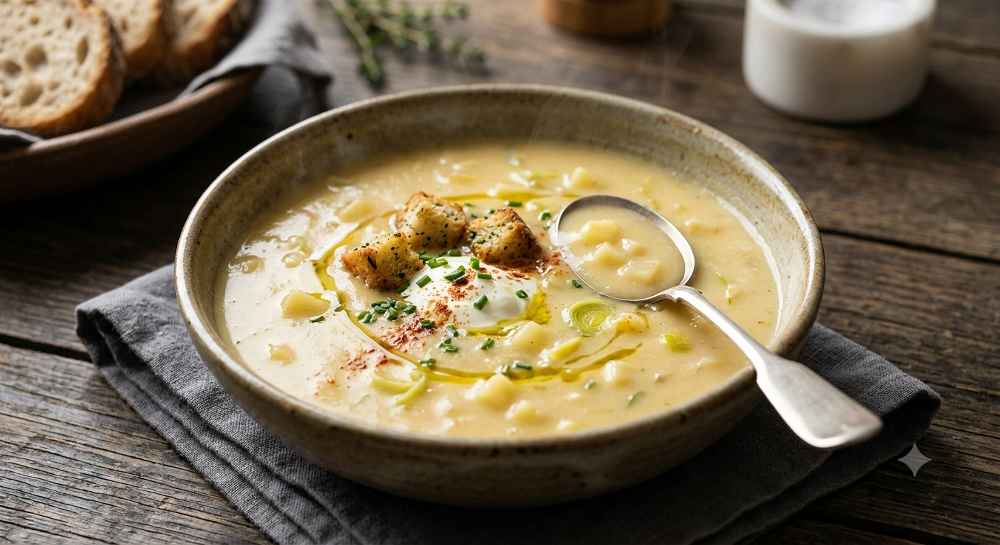
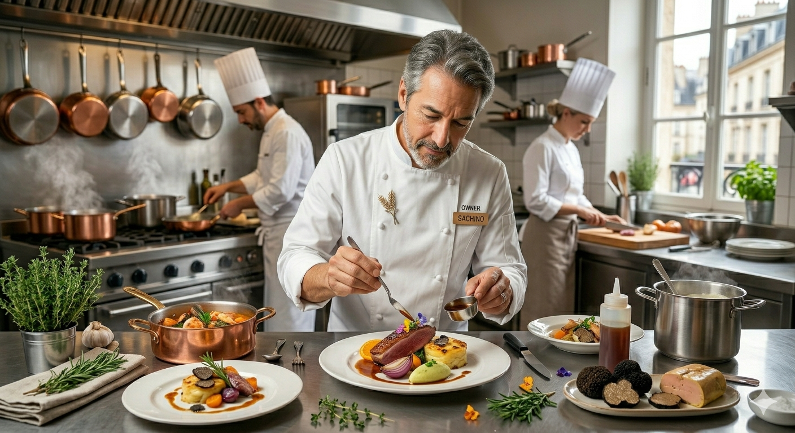
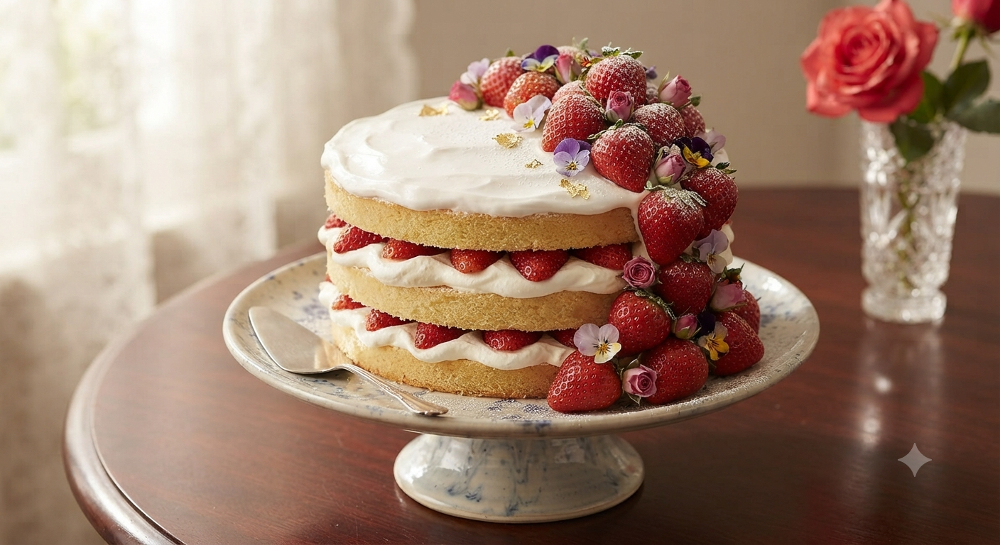

シェ・ナカガワの冷製コーンスープ
太陽を浴びて育った玉蜀黍の、
透き通るような甘みだけを、
丁寧に、丁寧に引き出しました。
素材への敬意と、お客様への想いを込めて。
シェフ中川が贈る、一期一会のコース料理。

クラシックフレンチの堅実な技法に、山形の郷土料理「だし」の爽やかさを添えて。鮎のソテーや山形黒毛和牛。地のものが持つ力強い生命力を、一皿の芸術へと昇華させます。

素材は、とうもろこしと、わずかな塩。そして時間。極限まで煮詰め、裏ごしを繰り返すことで生まれるシルクのような舌触り。一口飲めば、その濃厚さに驚き、飲み終えればその優しさに包まれます。

「いらっしゃいませ」という声、お料理の説明をする奥様の微笑み、そして最後は家族全員での見送りまで。私たちは料理だけでなく、この空間で過ごす「時間」そのものをお客様に寄り添って作り上げたいと考えています。
「結婚記念日は、必ずここで決めています。一軒家の家庭的な雰囲気が心地よく、最後のお見送りまで愛あるサービスをくだださいます。」
— 結婚記念日のご利用
「クラシックフレンチを基本にしながら、郷土料理を付け合わせに使ったり驚きの連続。特にコーンスープは絶品です。」
— 遠方より度々訪
「テイクアウトしたチーズケーキも優しい味。お店の方の対応もとても温かく、次はフルコースをいただきたいです。」
— テイクアウトのご利用

大切な日の食卓が、さらに輝く新たなご提案。準備が整い次第、随時ご案内いたします。
春の山菜や夏の実り、秋の肉料理、冬の寒鱈など、山形の旬食材を極限まで引き出した1日2組限定の完全オーダーメイドコース。お二人のストーリーを料理で描きます。
当日の記念写真と、シェフが心を込めて記した「本日のお献立」を一つに収めた特製メモリアルカードをご用意。ご自宅に帰られてからも余韻が続く贈りものです。